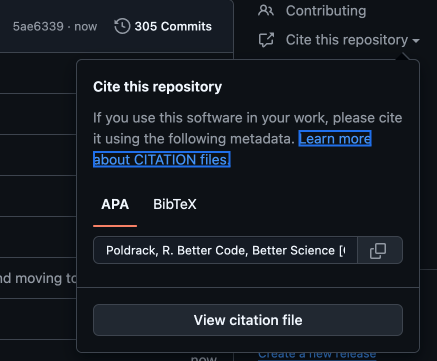

Science at its best is a communal enterprise, and the sociologist of science Robert Merton noted that “Secrecy is the antithesis of this norm; full and open communication its enactment” (Merton 1942). Unfortunately scientists have not always lived up to this norm in practice. It remains unfortunately common to hear anecdotes of researchers who refuse to share data or materials even after publishing in journals that have (largely unenforced) requirements for sharing. The metascientific evidence is also consistent with this. As just one example, when (Wicherts et al. 2006) requested data from authors of papers in a number of top journals in psychology, they were unable to obtain data from 73% of the authors. More recent work by (Tedersoo et al. 2021) has shown a similar pattern of unavailability across many scientific fields.
I will use the term “research objects” to refer generally to all forms of research materials and outputs, including data, code, and materials; while publications are also an important research object, I will not discuss them here. The open sharing of research objects has become increasingly prevalent in the 21st century, particularly with the genesis of the “open science” movement. In fact, when (Tedersoo et al. 2021) compared data availability between 2000–2009 and 2010–2019 they found that it had significantly increased over time. There are numerous contributors to this increase in transparency. Foremost, the reproducibility crisis across many fields of science has spurred efforts to increase the credibility of scientific research, with open sharing of data and materials being a main component of these efforts. Major scientific institutions have also made open science central to their effort, including the United States Government (which officially named 2023 as the “Year of Open Science”), the European Union, and UNESCO. Overall the scientific world is evolving strongly in the direction of making science more open and transparent, which many of us think is also a key to making it more reproducible.
In this chapter I will focus on how to effectively share research objects in a way that abides by the FAIR Principles that I outlined in Chapter 6.
13.1 Persistent identifiers
While you may never have heard the phrase “link rot”, you have almost certainly encountered a URL embedded in a publication that no longer works. Persistent identifiers (PIDs) are meant to address the issue of findability by providing a durable link to the metadata for an object along with a reference to its current location. The presence of a persistent identifier doesn’t ensure that the object will always be available, but it does provide a mechanism to find it if it does exist.
The need for PIDs is nowhere as clear as it is for people, especially for people with common names (think “Robert Smith” or “Mei Wang”). The need to identify individual researchers was the rationale for the ORCID (Open Researcher and Contributor ID), which provides free identifiers for researchers for life; for example, my ORCID is 0000-0001-6755-0259, and if you search for it you will find a public record that includes information about my education, academic affiliations, publications, and more. My name is quite uncommon, but for people with common names the ability to point to a unique identifier that is not tied to an employer helps ensure that people are findable and that their metadata is accessible. In addition, if a researcher changes their name for any reason, their ORCID stays the same, ensuring that they get credit for publications under both names. (If you are a researcher and don’t have an ORCID, you should definitely register for one!)
Another commonly encountered PID is the digital object identifier (DOI), which has become the most popular PID for publications and is also commonly used for other resources such as data and code. DOIs are issued by a publisher or archive, and they contain metadata about the object along with a current link to the object. If the links change (for example, the web site changes their URL structure), the publisher can easily update those links so that the DOI points to the correct link. The DOI doesn’t guarantee that the resource will always exist, but it does ensure that at least the metadata will persist even if the resource disappears. Other PIDs that are commonly encountered are RORs (Research Organization Registry) for research institutions and RRIDs (Research Resource Identifiers) for research resources in the biosciences including antibodies, cell lines, model organisms, software tools, and databases.
13.1.1 PID versioning
It’s common for a resource to change over its life; as one example, preprints posted to archives like arXiv or bioRxiv to be updated when a revised manuscript is created. Some PID providers (particularly DOIs) provide versioned DOIs that point to specific versions of an object, where others provide concept DOIs that instead point to the object in general; in addition, some providers provide both. For example, the Zenodo archive (discussed in more detail below) allows direct sharing of software releases from a Github repository, which we used to share code from the NARPS project that I discussed in an earlier chapter. Zenodo provides a concept DOI (doi.org/10.5281/zenodo.3339821) that points to the resource (defaulting to the latest version), and also provides version DOIs that allow specific reference to any particular version. When citing a versioned resource such as code, it’s important to cite the specific version that was used in the work; otherwise, a user following a concept DOI might be referred to a newer version than the one that was actually used in the research.
13.2 Resource accessibility
The accessible portion of the FAIR principles states that data should be accessible by a well-specified and standard protocol. This means that “data available from the authors upon reasonable request” is a decidedly unFAIR way to share data. Accessible does not, however, mean that the data must be openly available to the world. There are many cases when data cannot be shared openly, particularly in the context of human subjects data where the sharing of identifiable information could put the subjects at risk of harm. It is rarely the case, however, that data cannot be shared at all. Instead, it is common that sensitive datasets must be shared under a data usage agreement (DUA), as I will discuss in more detail in the later section on data sharing. FAIR sharing of controlled-access data requires that the process for accessing the data is made clear in the metadata.
Accessibility generally implies that the data are available online, potentially requiring some kind of authentication, preferably using a standardized protocol (e.g. ORCID login). In general it’s best to share objects via a standard archive, which will ensure that the metadata are findable and the data are broadly accessible. The use of a standard archive also helps ensure that the data will remain accessible in the long term, which is much less likely if they are shared from a lab server or private web site.
13.3 Interoperable data formats and software platforms
Once the objects are findable and accessible, it’s important that others are able to work with them, which is the interoperable portion of the FAIR principles; here I focus primarily on the engineering aspects of interoperability rather than the semantic aspects that focus on metadata. The most important aspect of interoperability is the use of open, non-proprietary, and machine-readable file formats. I’ve already discussed a number of these that span many different types of data, including CSV/TSV, JSON, HDF5, Zarr, and Parquet. Interoperability also requires that the data are documented and annotated in a way that makes them usable by other researchers. For example, a TSV file with no column labels and no data dictionary is not particularly useful to anyone.
I also believe that reproducibility requires the use of open-source software platforms such as Python or R. It is common in the social sciences (particularly economics) for researchers to use the Stata software package for statistical analysis. Sharing Stata code (.do files) allows me to read the code and potentially see what was done (though Stata’s syntax is notoriously unreadable by non-experts), but I have no way to actually run the code unless I purchase a Stata license or have access to a site license. It’s also very common for researchers in engineering and natural sciences to use the commercial package MATLAB; fortunately there is an open source alternative (Octave) that can run some MATLAB programs, but it will fail if the commonly used MATLAB Toolboxes are used. In my opinion, research using these closed-source commercial platforms should be considered non-reproducible, which is why I moved from MATLAB to Python as my primary computing platform in 2009.
13.4 Explicit licensing for reuse
It’s quite common for individuals to post material online (such as pushing code to a public Github repository) without any information regarding the terms of release and then refer to the material as “open source”, but this is a misnomer. Without an explicit license granting usage rights to users, the creator holds the copyright (assuming that the material is eligible for copyright) and “all rights are reserved”, meaning that the downloader has no right to use, modify, or redistribute the material. This is why one should always include an explicit license or use agreement with shared materials, and one should never use materials for research without an explicit license or use agreement. Otherwise there is the potential that the owner might disallow your usage of the materials, preventing release or publication and potentially resulting in legal liability. Because the nature of these license/agreements differ between different types of research objects, I will discuss them in detail below in the context of specific types of objects.
Note
Tip Never reuse research materials (code, data, or otherwise) unless you have an explicit agreement or license for their reuse. If someone offers you access to their materials, ask for an explicit agreement up front regarding authorship expectations on future publications.
13.5 Sharing code
Ten years ago I would have started this section with an explainer about why it’s so important to share one’s research code, but today there is relatively little opposition to sharing research code; in fact, in many areas of science it has become largely expected that code will be shared (often via Github or some other distributed version control platform). This does not, however, mean that it’s shared in a way that is effective in affording reuse and reproducibility. Here I will focus on the most important issues around making shared code useful, building on the FAIR principles for research software (Barker et al. 2022).
13.5.1 Licensing for shared code
In the context of software, “all rights are reserved” by the copyright holder unless an explicit license is provided. This means that without a license, someone downloading the code does not have the legal right to use, modify, or redistribute the code. This is why one should never rely upon code that has been shared without a license, as it can put an entire project in legal peril. You also protect yourself, since licenses generally include conditions that explicitly limit your liability and provide no warranty for the code.
There are many different licenses available for software, but they largely fall into two categories. Permissive licenses are those that place very few restrictions on the reuse, modification, or redistribution of the code; these generally allow commercial usage and closed-source reuse. The least prohibitive license, known as an Unlicense, places the code into the public domain (thus waiving any copyright claims), and only limits liability and warranty. Copyleft licenses (best known from the GNU General Public License, or GPL) are more restrictive, requiring full disclosure of any modifications. They are also sometimes referred to as viral licenses, since they also generally require that any modifications be released under the same license as the original. I tend to strongly favor permissive licenses like the MIT License, because they maximize the potential reuse of the code while still maintaining credit for the original authors.
When using open source code, it is essential to abide by the conditions of the license of the original code. In particular, if you are reusing code licensed under the GPL then you are required to release your entire project under the GPL.
13.5.2 Persistent identifiers for code
The most common way for researchers to cite code today is through a link to a Github repository. This is better than not sharing at all, but it fails to achieve a couple of important goals. First, repositories change over time, and a link to a repository does not specify which particular version of the code was used for the research. This can be addressed by using a link to a specific commit or release, but these are vulnerable to deletion, since any user can delete the repositories that they own at any time. Second, it makes the assumption that Github will always exist and continue to provide unfettered access to all current repositories. While there is no reason to think that Github will go away anytime soon, we can’t trust a commercial platform to have our best interests at heart. For this reason, I believe that research code associated with a publication should be shared using a persistent identifier (such as a DOI) on an archival platform.
At present, the easiest way to achieve this is to use the direct connection from Github to the nonprofit data archive Zenodo, which is operated by the high-energy physics lab CERN in Switzerland. Generating a archival code package with a DOI can be achieved in just a few steps:
Create an account on zenodo.org, logging in using your Github credentials
Navigate to the Github Repositories page for the new account, and enable the preservation of the relevant repository by clicking the “ON” button next to the repository; This must be done before the release, since Zenodo won’t generate DOIs retrospectively.
Go to the repository page on GitHub, and create a release for the software package, which is a frozen version of the current state of the repository. This should be done immediately after completing the analyses for the project, so that the code in the release exactly matches the code used for the project.
Zenodo will then automatically generate a version DOI that can be used to cite the specific version of software in a publication, along with a concept DOI for the package that resolves to the latest version.
There is another emerging standard PID for code known as the Software Hash Identifier (SWHID), which is being developed by the Software Heritage organization (softwareheritage.org) that also runs an archive for software preservation. Unlike most PIDs, which are extrinsic in the sense that they have no direct relation to the content of the objects that they refer to, the SWHID is an intrinsic identifier that is based on a hash of the content (similar to the hashes that are used for commits in git). This has the benefit that one can directly validate whether code matches the SWHID, and may become more prevalent in the future. Saving code to the Software Heritage archive is as easy as submitting a Save Code Now request on the web site.
13.5.3 Software citation
As software resources are increasingly recognized as legitimate scientific contributions, it is increasingly common for them to be cited in research papers and included on curricula vitae for academic advancement and hiring. (Smith et al. 2016) laid out a set of principles for the citation of software:
Importance: Software should be considered an important intellectual product that is worthy of citation.
Credit and attribution: Software citation should give proper attribution and credit to its creators and maintainers.
Unique identification: Software to be cited should have a unique PID.
Persistence: Software to be cited should be available in a persistent manner; if the software is not available then at least the metadata should be persistent.
Accessibility: Software citations should make clear how to obtain the software.
Specificity: Software citations should refer to the specific version of the software that was used in the research.
The GitHub-Zenodo and Software Heritage mechanisms described above can help fulfill these principles. Code citation can be further supported by providing citation metadata via the CITATION.cff file. Here is an example of the CITATION.cff file for the bettercode package associated with this book:
This file is used by both Github and Zenodo to populate citation information; see Figure 13.1 for an example of how Github displays this information in the “Cite this repository” section. Including this file is a great way to help encourage proper citation of your code, and there are tools (such as CFFinit) that can help create a citation file for any project.

Figure 13.1: An example of the citation information generated automatically by Github on the basis of the CITATION.cff file.
For researchers who use software in their research, it’s important to cite the software so that the creators will receive credit. This is best done by citing it in the reference section alongside the cited papers, so that it is picked up by citation indexing systems.
13.5.4 Software metadata
In addition to citation information there are a number of other metadata that are important in order to make the code FAIR. A set of guidelines regarding software metadata have been laid out in the RSMD (Research Software MetaData Guidelines for End-Users) project (Gruenpeter et al. 2024). An emerging standard for the specification of software metadata is the codemeta.json file, which provides a standard vocabulary for the specification of software metadata. This file uses the JSON-LD format that I mentioned in a previous chapter, which links the terms in the dictionary to a format vocabulary. The codemeta-generator tool (codemeta.github.io/codemeta-generator) provides an easy interface for generating of these files. Github itself doesn’t do anything special with the codemeta.json contents, but if the software is archived in Software Heritage then the project will be searchable by the specified metadata. Because this is becoming the standard, generating metadata now will also help ensure that your project remains findable in the future.
Because many systems (e.g. the PyPI package archive) do not use codemeta.json, it’s also important to put relevant information in other files that may be used. For Python code, the pyproject.toml file allows specification of a number of metadata elements; in particular, it’s important to specify the name, version, description, license, authors, and keywords under the [project] section, and project URLs under the [project.urls] section, since these are used by PyPI for searching packages in the index.
13.5.5 Software versioning
It is essential to clearly version the software used in a research project to ensure reproducibility of the results, since it is common for the behavior of software to change between versions. There are two standards for software versioning. The approach recommended for most projects is semantic versioning, which uses a numeric format with a specific structure: MAJOR.MINOR.PATCH. These different levels are meant to imply different degrees of backwards-compatibility:
Major version changes (e.g. 1.2.4 ->2.0.0) are meant to imply changes that are likely to break previously working code, such as changes in the API
Minor version changes (e.g., 1.2.4 ->1.3.0) are meant to imply the backwards-compatible addition of features
Patch version changes (e.g. 1.2.4 ->1.2.5) are meant to imply backwards-compatible bug fixes
Because the line between different kind of changes can be fuzzy, it’s always good to be clear about the exact nature of changes in a change log. Also note that “0.x.x” generally implies that the code is unstable, so things can break between any of the version types; in other cases, researchers will use tags to further delineate versions:
alpha versions (e.g. 1.0.0a1) are meant to imply that the code is too early for general use
beta versions (e.g. 1.2.1b1) are meant to imply that the software is in beta-testing mode
release candidate versions (e.g. 1.5.3rc1) are meant to imply an early release of the code for final testing by users before the official release
Note that the Python versioning standard is slightly different from the official Semantic Versioning (2.0) standard that is used in some other languages, which uses hyphens (e.g. 1.5.3-rc1).
Another approach that is sometimes used in large projects is calendar versioning, where the version is based on the year and date (e.g. 25.2 for the second release of 2025). For most projects the semantic versioning approach is preferred since it more clearly signals the nature of the change, but in some cases users may want to be able to tie the software to specific points in time.
13.5.6 Preparing code for sharing
Before sharing code, it’s important to make sure that it is ready to share, which involves three important steps: sanitization, portability, and documentation.
13.5.6.1 Sanitization
The goal of sanitization is to make sure that no private or sensitive information is shared along with the code. This includes:
passwords or other credentials
API keys or tokens
Protected Health Information (PHI) or Personally Identifiable Information (PII)
The most powerful tool for sanitization is the .gitignore file, which helps prevent files from being checked into a git repository by preventing them from appearing in the status or from being added (unless the -f flag is used to force an add). Any files containing private or sensitive information (such as environment files or config files) should be added to the .gitignore file as soon as they are created. If you are sharing a package that requires configuring these files, then it can be useful to include an example version (e.g. .env.example) that shows the structure of the file without including any private information. Note that .gitignore only ignores files that are untracked; if a file was previously committed, then adding it to .gitignore will not remove it from previous commits.
13.5.6.2 Ensuring portability
We have already discussed coding portably in Chapter 3, by which I mean ensuring that there are no configuration details in the code that would prevent the code from running on another machine. By far the most common portability issue is the inclusion of absolute file paths, which are unlikely to resolve properly on a different computer.
13.5.6.3 Documentation
I have already discussed documentation in Chapter 7. If you didn’t generate documentation during the creation of the code, it’s definitely important to create at least minimal documentation prior to release. See the previous section for more details on how to create good documentation.
13.5.7 Publishing software packages
If your code involves a module that others might want to reuse, then it’s worth considering publishing it to a package repository. This makes it easy for anyone to install your software with a single command, rather than requiring a download of the code followed by installation. The most widely used package index in the Python ecosystem is the Python Package Index (known as PyPI); if you have ever used the pip package installer to install a Python package, then you have used PyPI as it is the default package index for pip. In the Conda ecosystem, another popular package index is conda-forge (conda-forge.org), which can be used with the conda install command. Both of these systems allow versioning, so that users can install a specific version of the package to facilitate reproducibility. Here I will focus on PyPI and uv as an example.
13.5.7.1 Making a package installable
To make a package installable, the first step is to create a pyproject.toml which is now the standard configuration file for Python projects (replacing the older setup.py and setup.cfg). One important setting is the choice of build backend, which is the system that is used to generate the Python package files. For this example I will use the uv_build backend that is now the default for uv projects. There are two types of files generated when the package is built. One, known as an sdist (for “source distribution”), is basically a tar archive containing the code and metadata. This allows the building of the package across different platforms, and serves as a transparent view of the code in the package. The other, known as a wheel, is a pre-built version of the package; if the package is pure Python then this will be a platform-independent package, whereas if there is any compiled code (such as C code) then this will be specific to the platform where it was compiled. Using the wheel can save time for large projects where building the package can take significant time.
To build the bettercode package using uv, we simply run the build command:
$ uv buildBuilding source distribution...Building wheel from source distribution...Successfully built dist/bettercode-0.1.0.tar.gzSuccessfully built dist/bettercode-0.1.0-py3-none-any.whl
Note that the wheel file has -none- in its name, which refers to the fact that it is platform-independent. Once the package is built it is ready to push to PyPI.
13.5.7.2 Publishing packages to PyPI
Once the package is built, then we can upload it to PyPI for distribution. We first need to ensure that the version information is correct. This matters less for the first upload, but once you have uploaded a release to PyPI then you will need to update the version for future uploads to work. uv has a useful version option that that allows easily bumping the version according to the kind of change that is being made. For example, if we wanted to make a minor version change, we could do this:
This changes the metadata in pyproject.toml to match the new version, though we would need to rerun the uv build command to create the build files for the new version. Next we need to create and/or log into our account on pypi.org, and then make sure that the project name (specified as the “name” variable in pyproject.toml) is not already in use (by searching the index for that name); if it is then we will have to change the name of the project. Assuming it isn’t then we need to set up our PyPI authentication credentials and download a token, which can be provided at the command line with the publish command:
If the publish command is successful, then the project should be visible on PyPI, as this one is at pypi.org/project/bettercode. It’s also possible to automate the generation of new PyPI releases using Github Actions; see the uv documentation for more details.
13.5.8 Sharing data
In Chapter 7 I covered many of the essential topics regarding data sharing. In particular, I highlighted the importance of proper metadata and data documentation, and the importance of using appropriate file formats and data organization standards. Here I will focus specifically on the mechanics of sharing.
13.5.8.1 Data use agreements and licensing
Just as with code, it is essential that any shared data are accompanied by an explicit data use agreement (DUA). These are often referred to as licenses, but licenses are legal objects related to copyrighted materials; as I mentioned in Chapter 7, the degree to which data are subject to copyright varies across jurisdictions and depends on the degree of “creative activity” involved in creation and/or curation of the dataset. This is why software licenses are not appropriate for shared data: They assume that the material being shared is copyrighted, and thus would not have legal force if the data were not copyrightable. They also sometimes have terms that are specific to software, particularly with regard to patent rights.
It’s more common to release data under agreements that are meant for a broader class of objects including data and databases. In particular, the Creative Commons licenses are often used for data release; I will refer to them as “licenses” for simplicity, noting that they may not be true licenses in the legal sense in some cases. The most permissive of these is the Public Domain Dedication (known as CC0), which waives all rights of the owner and places no legal restriction on the user in terms of sharing or licensing of derivative works. This is generally the preferred option for shared data when possible. Another alternative is the Attribution license (known as CC-BY), which legally requires attribution of credit to the creator. While many researchers feel that this is a more appropriate license given their desire for credit, it’s rare that a researcher would actually engage in legal action if the attribution clause was violated, and scientific norms generally ensure that data users will give credit to the owner even if it is not legally required.
In some cases it is necessary to place additional restrictions on how the data will be used; common cases for this include the sharing of proprietary information (e.g. internal company data) or sensitive information (e.g., PHI/PII). In addition, some jurisdictions require a higher degree of control over the sharing of human subjects data, specifically the European countries covered by the GDPR. In these cases, it is often necessary to negotiate a DUA between institutions, which usually requires substantial time and effort. If this situation arises, it is generally best to start by talking with the relevant legal officials within one’s institution to learn more about the process, since it can vary drastically between institutions and jurisdictions.
There is also a concerning development in the US, in which a legal rule initiated by the Biden administration in 2024 has restricted access of individuals from “countries of concern” (including China) to “bulk sensitive data” (specifically including “human ’omic data”) and US Government related data1. This ruling will require additional access control (e.g. preventing some foreign researchers in US labs from accessing those data), and in some cases may also result in the need to use systems with a higher security level to work with those datasets.
13.5.8.2 Choosing a data repository
Once one is ready to share their data, they need to choose a repository through which to share it. It’s important to choose a repository that has the following features:
It has a strong sustainability model.
For a repository without institutional funding, it should have plan for data preservation in case the repository were to lose funding.
It provides PIDs for deposited data.
The data are immutable once shared; new versions can be posted, but the original versions remain available by versioned PIDs.
It exposes relevant metadata for search engines or other sites.
In cases where access control is necessary, the repository should provide the necessary mechanisms.
It should provide clear licensing of datasets.
It should provide standard protocols for data transfer, including APIs for machine-readable access.
There are two main classes of repositories. Generalist repositories are those that are meant to store any kind of data; examples include the Open Science Framework, Zenodo, and Dryad. Specialist repositories are those that specialize in a particular kind of data; there are many such repositories across all domains of science, which are cataloged at re3data.org. These vary from databases focused on a very specific type of data, to those focused on broad scientific subfields. Notable examples include:
GenBank: a database of openly available DNA sequences, operated by the US National Institutes of Health
Inter-university Consortium for Political and Social Research (ICPSR): A data archive for the social sciences, run by the Institute for Social Research at the University of Michigan.
OpenNeuro: A database for BIDS-compliant neuroscience data, run by my laboratory at Stanford
PANGAEA: A database of earth and environmental science data, run by researchers at the Helmholtz Center for Polar- and Marine Research and University of Bremen, Germany
There are important tradeoffs when choosing between a generalist versus a specialist repository. Generalist repositories generally are much larger and better funded, and provide strong sustainability features. On the other hand, specialist repositories are more likely to support the particular features of data from their subfield, and data in specialist repositories are more likely to be discovered by researchers in the subfield. I generally advise researchers to use a specialist repository for their data if one exists and is well-established, but to otherwise consider using a generalist repository.
13.5.8.3 Sharing human subjects data
For researchers working with human subjects data, it is important to ensure that they are shared ethically. In the US, data that have been deidentified (as discussed in Chapter 7) are not considered “human subjects data” under US Federal Regulations, and thus can legally be shared openly in most cases (unless the original consent explicitly stated that the data would not be shared). However, there are increasing concerns about the ability to reidentify subjects from data using AI tools even after the data have been “deidentified”, and the US National Institutes of Health suggested in its 2023 Policy for Data Management and Sharing2 that controlled access should be considered even for data that have been deidentified. It is important to consider the potential harm that would occur due to reidentification as well as the potential likelihood of reidentification; datasets including features such as disease diagnoses that, if disclosed, could result in significant harm to the subject should be considered for controlled access even if it is not legally required.
It is also important to ensure that informed consent for research subjects provides information regarding how the data will be shared. If the data will be shared broadly, then subjects should be informed that that data will be deidentified, but also make clear that the researcher cannot guarantee that reidentification will not be possible in the future. Subjects can then properly weigh the risks of participation. A number of model consent forms have been developed to support broad sharing; in my field of neuroimaging, the Open Brain Consent (Bannier et al. 2021) was developed to support researchers in the US and Europe who wish to be able to openly share their data.
13.5.8.4 Sharing large datasets
When datasets reach into the terabytes or beyond, it becomes very difficult to share them by standard means like web downloads. In this case, one has to decide whether to bring the data to the compute, or the compute to the data. If it’s necessary to transfer very large datasets, the most common solution is the Globus file transfer system (globus.org). Globus provides the ability to quickly and securely transfer very large amounts of data in a fault tolerant way. It also allows the verification of the data transfer and encryption of the data, and provides a web dashboard that allows monitoring of large transfers. Most HPC centers provide a Globus endpoint that allows transfer to and from other systems, and it’s also possible to mount cloud file systems using Globus.
Another alternative for working with large shared datasets is to move the computing to a system that is attached to the data, rather than copying the data to one’s own computing system. This is a common workflow on cloud systems, where it’s usually straightforward to run compute instances that are in the same data center as the data, making access fast and efficient. Many open datasets (including our OpenNeuro dataset) are available on Amazon’s cloud systems via the AWS Data Exchange. Analyzing data in the cloud can get expensive quickly due to the cost of cloud computing, but it may become cost-efficient depending on the cost of local data storage for very large datasets.
13.5.8.5 Data citation
There are two standard ways to cite data. The most common is to use a standard citation that includes the DOI for the dataset that was issued by the archive, preferably a version DOI for the specific version of the data used in the research. However, it is increasingly common for high-value datasets to be described in a data descriptor, which is a standard journal publication that describes the dataset and links directly to the data. There is an increasing number of journals that publish such data descriptors, with Scientific Data being the most prominent as of 2026. The publication of a data descriptor allows the researcher to obtain credit in the most valuable form for academic progression: journal citations. For example, we published a paper describing a large neuroimaging dataset (Poldrack et al. 2016), which as of early 2026 has been cited more than 450 times according to Google Scholar. Data descriptors are becoming an increasingly popular mechanism for researchers to obtain academic credit for their shared data.
13.6 Sharing computational models
Computational models are a common form of research object. The sharing of these models has become increasingly prominent in the context of deep learning and AI models. Models actually involve several different types of objects:
The code that defines the model architecture
The code used for training and evaluating the model
The configuration parameters used for training
The learned parameters of the model (and possibly checkpoints containing parameters from intermediate steps during training)
The training data used to train the model
Here I focus on the sharing of model parameters, since the previous sections have covered sharing of code and data. It’s important to note here that a model should not be considered “open source” unless it shares all of these components. Many of the AI models that have been openly shared (such as the Llama large language models shared by the Meta Corporation) are more appropriately referred to as “open weight” models since they often have not shared all of the training data and code.
Model parameters should be shared according to the same principles discussed above for code and data:
They should be shared using data formats that are standard within the specific domain (which may vary depending on the class of model)
They should be shared with sufficient metadata to allow interpretation and attribution of credit
They should be shared with an explicit license that outlines terms of reuse
The Hugging Face Hub (huggingface.co/models) has become a very prominent generalist archive for machine learning models and datasets. It supports a number of FAIR practices, including the ability to generate DOIs for models or datasets and the ability to associate an open source license with the objects. It also provides significant tooling for seamlessly downloading models and datasets. Hugging Face also provides access to model cards, which are a particular form of documentation developed within the machine learning literature (Mitchell et al. 2019) that describes the model and any potential limitations or biases in a human-readable way.
There are relatively few specialist repositories for models. One notable example is the Vascular Model Repository (vascularmodel.com) developed by my Stanford colleague Alison Marsden and her team, which shares vascular models generated using the open-source SimVascular software for modeling of patient-specific blood flow patterns using images of the heart. When such a specialist repository is available it’s usually best to share the model parameters via that mechanism.
13.6.1 Licenses for AI models
It is increasingly common for AI models to be released under what have come to be called Responsible AI Licenses, which include terms regarding the acceptable uses of the model. In particular, these licenses are meant to prohibit harmful uses of the code. As an example, here are the behavioral terms included in the AI Pubs Open Rail-S license (www.licenses.ai/ai-pubs-open-rails-vz1):
You agree not to use the Source Code or its Derivatives in any of the following ways:
1. Legal:
(a) In any way that violates any applicable national, federal, state, local or international law or regulation.
2. Harm and Discrimination
(a) For the purpose of exploiting, Harming or attempting to exploit or Harm minors in any way;
(b) To generate or disseminate false information with the purpose of Harming others;
(c) To generate or disseminate personal identifiable information that can be used to Harm an individual;
(d) To defame, disparage or otherwise harass others;
(e) For any use intended to or which has the effect of Harming individuals or groups based on online or offline social behavior or known or predicted personal or personality characteristics
(f) To exploit any of the vulnerabilities of a specific group of persons based on their age, social, physical or mental characteristics, in order to materially distort the behavior of a person belonging to that group in a manner that causes or is likely to cause that person or another person Harm
(g) For any use intended to or which has the effect of discriminating against individuals or groups based on legally protected characteristics or categories.
3. Transparency
(a) To generate or disseminate machine-generated information or content in any medium without expressly and intelligibly disclaiming that it is machine-generated;
(b) To impersonate or attempt to impersonate human beings for purposes of deception;
(c) For fully automated decision making that adversely impacts an individual’s legal rights or otherwise creates or modifies a binding, enforceable obligation.
This license also makes the behavioral use terms viral, even if the copyright license is not: “Even though derivative versions of the Source Code could be released under different licensing terms, the License specifies that the use restrictions in the original License must apply to such derivatives.”
13.7 Sharing environments and platforms
As we discussed earlier in the section on containers, complete reproducibility requires the sharing of the computational environment in which the computing was performed. At minimum, one should share a description of the dependencies that went into the computation. The pyproject.toml file for a project will specify the dependencies, but allows loose version constraints (e.g. numpy>=1.24). While this is good for general usage, it does not ensure reproducibility since we can’t tell what specific version of the package was used in any particular analysis. Instead it is best to include a lock file that lists the exact versions of each dependency; when using uv, the uv.lock file contains this information. However, the lock file only contains information about the Python dependencies, and does not contain details about the system level libraries (such as the version of the glibc library, which is known to potentially affect numerical computations; (Glatard et al. 2015)). It is for this reason that we generally prefer to share containers, which encapsulate the system environment more broadly.
Docker has become the standard tooling for generating compute containers. As I described in the previous section on containers, the contents of a Docker container image are defined in part by a Dockerfile, which provides a recipe for building the container. It’s important to note that while a container image provides a reproducible computing environment, the Dockerfile itself does not. In a large study of Dockerfiles on GitHub, (Malka et al. 2026) found that very few containers could be perfectly reproduced or even functionally reproduced (i.e. including the same package versions). In fact, of a set of 5,298 Dockerfiles that were successfully built in 2023, only 72% of those could be rebuilt just two years later. This suggests that the sharing and archiving of container images is essential for reproducibility. Container images are commonly shared through the Docker Hub web archive. However, it is important to realize that this archive may delete images that are not accessed for a certain period of time. Container images should thus be archived using a generalist repository such as Zenodo or OSF in order to ensure their continued availability.
Gruenpeter, M., Granger, S., Monteil, A., … Mejias, G. (2024, March). Guidelines for recommended metadata standard for research software within EOSC (Version V1.0), Zenodo. doi:10.5281/zenodo.10786147
Malka, J., Zacchiroli, S., & Zimmermann, T. (2026). Docker does not guarantee reproducibility. Retrieved from https://arxiv.org/abs/2601.12811
Merton, R. K. (1942). Science and technology in a democratic order. Journal of Legal and Political Sociology, I, 115–26.
Mitchell, M., Wu, S., Zaldivar, A., … Gebru, T. (2019). Model cards for model reporting. In Proceedings of the conference on fairness, accountability, and transparency, ACM, pp. 220–229.